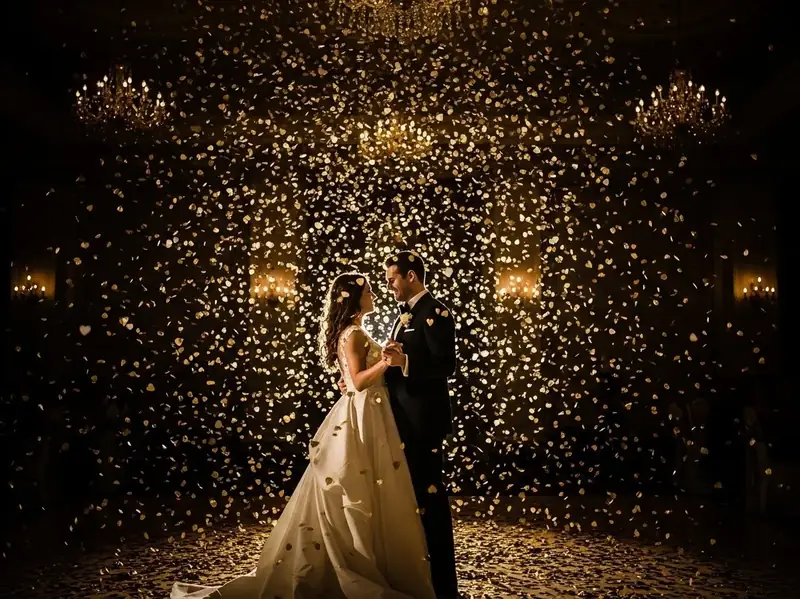
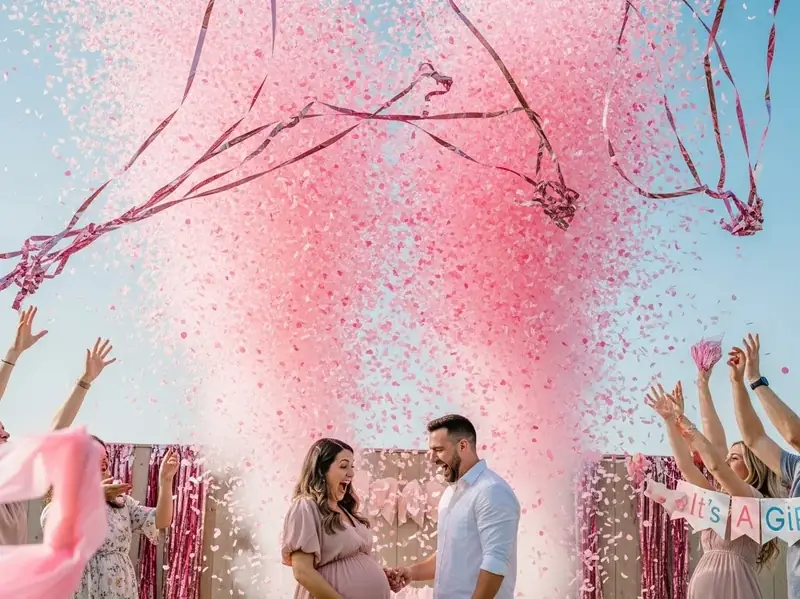
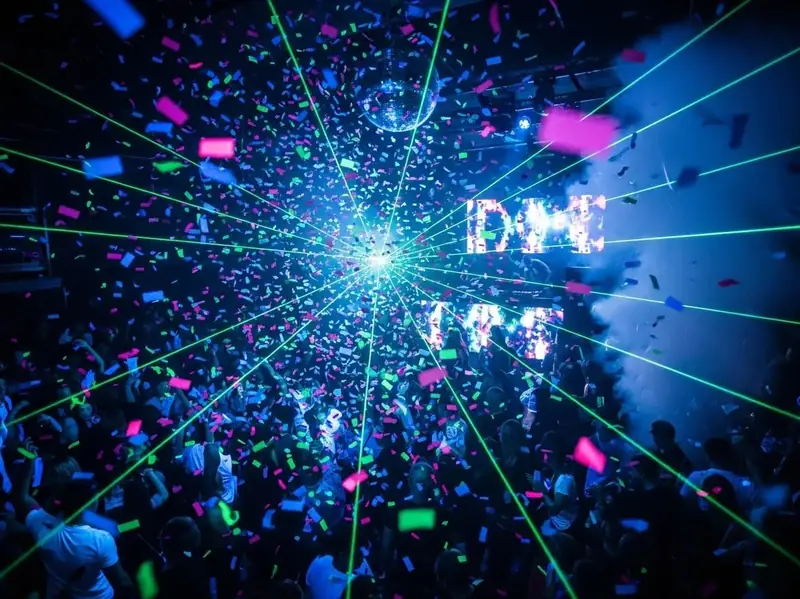

Pocos efectos especiales generan una respuesta emocional tan inmediata como una lluvia de confeti en el momento exacto. Ese instante en que cientos de papelitos dorados caen sobre los novios durante su primer baile, o cuando el confeti rosa revela que sera nina, queda grabado en la memoria y en las fotografias para siempre.
Las maquinas de confeti han evolucionado significativamente en los ultimos anos. Ya no se trata solo de canones manuales de un solo disparo. Hoy existen sistemas electricos con control remoto, canones CO2 de alto alcance y equipos que permiten disparos continuos durante varios segundos. Esta variedad permite adaptar el efecto al tipo de evento, al presupuesto y al impacto visual que deseas lograr.
En REDEIL ofrecemos renta de maquinas de confeti y canones de papel para bodas, XV anos y eventos en Ciudad de Mexico y Estado de Mexico. Contamos con equipos profesionales tipo Chauvet Funfetti, canones CO2 de alto alcance y lanzadores manuales para diferentes necesidades. Trabajamos con confeti metalizado dorado y plateado, papel de seda multicolor, petalos de rosa y formas especiales como corazones y estrellas.

Tipos de Maquinas de Confeti Disponibles
La eleccion del equipo correcto depende del tipo de evento, el espacio disponible, el numero de momentos que quieres marcar y el efecto visual que buscas. Cada sistema tiene caracteristicas especificas que lo hacen ideal para diferentes situaciones.
Canon Manual de 40cm
El canon manual de 40 centimetros es la opcion mas economica y practica para momentos puntuales. Funciona con presion de aire comprimido, sin necesidad de electricidad ni CO2. Un solo disparo alcanza hasta 6 metros de altura y cubre aproximadamente 15 metros cuadrados. Es perfecto para la salida de la iglesia, el brindis o la entrada de los novios al salon. Disponible con confeti metalizado o papel de seda en los colores que elijas.
Canon Manual de 80cm
La version grande del canon manual ofrece mayor carga de confeti y alcance extendido hasta 10 metros. Es el favorito para bodas por su efecto mas prolongado y cobertura de hasta 30 metros cuadrados. El confeti rectangular de 55x17mm cae lentamente creando un efecto cinematografico ideal para fotos y video. Un solo disparo, pero con impacto visual significativamente mayor que el modelo compacto.
Maquina Electrica Funfetti
La maquina profesional tipo Chauvet Funfetti Shot representa un salto cualitativo importante. Su motor electrico de 1,380W permite disparos continuos de hasta 25 segundos, no solo un instante. Alcanza 9 metros con cobertura de 50 metros cuadrados. El control puede ser por DMX para sincronizacion con iluminacion profesional, o mediante control remoto inalambrico incluido con 23 metros de alcance. La capacidad de 0.5kg de confeti por carga permite recargar durante el evento para multiples momentos.
Canon CO2 Mini Blaster
Los canones que utilizan CO2 ofrecen disparos mas potentes y precisos que los sistemas de aire o electricos. El Mini Blaster alcanza mas de 10 metros de altura con 3kg de capacidad. El efecto de rafaga con CO2 crea un impacto visual instantaneo ideal para revelaciones de genero, inauguraciones y momentos sorpresa. Como beneficio adicional, el gas CO2 anade un efecto de niebla fria momentanea que realza el dramatismo del disparo.
Canon CO2 Big Blaster
Para eventos masivos y escenarios de gran formato, el sistema Big Blaster es la opcion de maxima potencia. Con doble botella de CO2 y capacidad de hasta 20kg de confeti, dispara entre 15 y 20 metros de altura con efecto espectacular. Cubre areas de mas de 200 metros cuadrados en cada disparo. Ideal para conciertos, festivales, eventos corporativos de gran escala y celebraciones de campeonatos. Requiere operador especializado y espacio amplio para su correcta operacion.
Lanzador 4 Shot DMX
Este sistema profesional cuenta con 4 canones de 80cm controlados independientemente por DMX en 5 canales. Permite disparos individuales o simultaneos con orientacion de 360 grados. Es la opcion perfecta para secuencias coreografiadas, shows de bodas con multiples momentos, o eventos donde necesitas varios disparos distribuidos a lo largo de la noche. Cada cartucho es recargable con confeti o serpentinas segun prefieras.
Maquina de Confeti Continua
A diferencia de los canones que disparan rafagas, la maquina continua tipo soplador produce una lluvia constante y suave de confeti durante el tiempo que desees. Ideal para photocalls, sesiones de fotos profesionales, pistas de baile durante toda la fiesta o ambientacion permanente de un espacio. El confeti cae de forma natural y elegante. Incluye 12 LEDs RGB de 3W que iluminan el confeti en colores para un efecto visual mas impactante incluso en ambientes oscuros.
Momentos Especiales
Bodas, XV anos, revelaciones de genero y eventos corporativos en CDMX y Estado de Mexico.
Tipos de Confeti Disponibles
El tipo de confeti que elijas impacta directamente en el resultado visual y en como se vera en las fotografias. Ofrecemos una amplia variedad de opciones profesionales para adaptarnos a la tematica de cada evento.
Confeti Metalizado
El confeti metalizado es el mas brillante y espectacular. Disponible en dorado, plateado, oro rosa y multicolor, crea reflejos impresionantes cuando la iluminacion del evento lo alcanza. Es la opcion preferida para bodas elegantes y eventos de gala donde se busca un efecto lujoso y sofisticado. El confeti metalizado rectangular de 55x17mm es el estandar profesional que utilizamos en la mayoria de los eventos.
Papel de Seda
El papel de seda es mas ligero que el metalizado, lo que hace que caiga mas lentamente y permanezca en el aire por mas tiempo. Esta disponible en practicamente cualquier color solido, lo que permite combinarlo exactamente con la paleta de tu evento. Es ideal cuando buscas un efecto mas suave y romantico, o cuando necesitas colores especificos que no estan disponibles en metalizado.
Petalos de Rosa
Para bodas ultra romanticas, ofrecemos petalos de rosa sinteticos que pueden dispararse desde canones especialmente configurados. Disponibles en rojo, rosa, blanco o mezcla de colores. Los petalos caen suavemente y crean fotografias espectaculares. Son perfectos para el primer baile, pedidas de mano, aniversarios y cualquier momento intimo que quieras resaltar con un toque romantico.
Formas Especiales
Tambien contamos con confeti en formas especiales: corazones para bodas y San Valentin, estrellas para fiestas infantiles y eventos corporativos, mariposas para XV anos, y el clasico confeti rectangular o cuadrado de 17mm. Estas formas especiales anaden un elemento tematico que refuerza el tipo de celebracion.
Confeti Biodegradable
Para eventos en jardines, haciendas y espacios exteriores, ofrecemos opciones biodegradables fabricadas con papel especial que se disuelve con agua en pocos dias sin danar el medio ambiente. Esta opcion es cada vez mas solicitada por venues que cuidan sus areas verdes y por parejas conscientes del impacto ambiental de su celebracion.
Momentos Especiales para Usar Confeti
Las maquinas de confeti son el complemento perfecto para marcar los momentos mas importantes de cualquier celebracion. La clave esta en elegir los momentos correctos y coordinar el disparo con precision.
Bodas y Recepciones
En bodas, los momentos clasicos para el confeti incluyen: el "si acepto" durante la ceremonia, la salida de los novios de la iglesia o venue, el primer baile como esposos, el brindis principal, y el corte del pastel. Muchas parejas eligen uno o dos de estos momentos para que el impacto sea mayor. El confeti dorado o plateado es el favorito, aunque cada vez mas parejas optan por colores que combinen con su paleta de decoracion.
XV Anos
En fiestas de quince anos, los momentos imprescindibles son el vals con el papa, el cambio de zapatilla, la ultima muneca y el brindis. El confeti de corazones o en colores que combinen con el vestido de la quinceaneara crean fotografias espectaculares. Algunos paquetes incluyen multiples disparos para marcar cada momento especial de la noche.
Revelaciones de Genero
Las revelaciones de genero se han convertido en uno de los usos mas populares de los canones de confeti. El momento en que el confeti rosa o azul explota en el aire genera una reaccion emocional instantanea. Utilizamos canones CO2 para estas revelaciones porque el efecto es mas dramatico y el color se distingue claramente incluso en espacios abiertos. El gas CO2 anade un efecto de niebla que realza el momento.
Eventos Corporativos
En el ambito empresarial, el confeti marca inauguraciones de oficinas, lanzamientos de productos, celebraciones de metas alcanzadas, fiestas de fin de ano y premiaciones. El confeti metalizado dorado transmite exito y celebracion, mientras que opciones en colores corporativos refuerzan la identidad de marca. Para eventos de gran escala como convenciones, utilizamos sistemas de alta potencia que cubren auditorios completos.
Cumpleanos y Fiestas
El disparo de confeti en el momento exacto de soplar las velas crea fotografias memorables que los invitados compartiran en redes sociales. Para cumpleanos infantiles, el confeti de estrellas o formas divertidas anade magia al momento. En fiestas de adultos, especialmente cumpleanos de decadas (30, 40, 50), el confeti marca la transicion a la celebracion con estilo.
Conciertos y Festivales
Para producciones de entretenimiento de gran escala, contamos con sistemas capaces de cubrir escenarios completos y areas de audiencia. Los canones CO2 Big Blaster disparan hasta 20 metros de altura, creando el efecto espectacular que el publico espera en estos eventos. Trabajamos con productores y coordinadores tecnicos para sincronizar los disparos con momentos especificos del show.
Consejo Profesional
Coordina con tu fotografo y videoografo antes del disparo. Ellos pueden posicionarse estrategicamente para capturar el momento desde el mejor angulo. Avisa al DJ con 30 segundos de anticipacion para que baje la musica y cree expectativa.
Que Incluye el Servicio de Renta
Cada paquete de renta de maquinas de confeti con REDEIL esta disenado para que no tengas que preocuparte por ningun detalle tecnico. Nos encargamos de todo para que tu solo disfrutes del momento.
Asesoria Personalizada
Antes de tu evento, te ayudamos a elegir el tipo de maquina y confeti ideal segun el espacio, el numero de momentos especiales que quieres marcar y tu presupuesto disponible. Consideramos factores como altura del techo, tipo de venue, cantidad de invitados y coordinacion con otros proveedores.
Transporte y Confeti Incluido
Llevamos el equipo hasta tu venue y el confeti suficiente para los disparos contratados. El color y tipo de confeti es a tu eleccion sin costo extra. Si necesitas confeti adicional o especial, podemos conseguirlo con anticipacion.
Operador Tecnico
Un tecnico profesional opera el equipo durante todo tu evento. Se coordina con tu DJ, coordinador de bodas o maestro de ceremonias para disparar en el momento exacto que indiques. No tienes que preocuparte por la operacion tecnica.
Control Remoto Inalambrico
Las maquinas electricas incluyen control remoto inalambrico con alcance de hasta 23 metros. Esto permite que nuestro operador active el disparo desde cualquier punto del salon sin cables ni instalaciones complicadas.
Prueba Previa
Antes de tu evento, realizamos una prueba de funcionamiento del equipo para asegurar que todo funcione perfecto en el momento clave. Esta prueba puede hacerse el dia del montaje o en una visita previa segun lo requieras.
Equipo de Respaldo
Siempre llevamos canones y confeti extra a cada evento. Si un disparo falla por cualquier razon o decides que quieres un disparo adicional en un momento no planeado, estamos preparados sin costo extra.
Por Que Elegir REDEIL para tu Confeti
- Operador Incluido: Tecnico profesional que coordina y dispara en el momento exacto.
- Variedad de Equipos: Desde canones manuales hasta sistemas CO2 de alta potencia.
- Confeti Premium: Metalizado, seda, petalos y formas especiales disponibles.
- Cobertura Amplia: Servicio en toda la CDMX y Estado de Mexico.
Galeria de Maquinas de Confeti en Accion


Como Funciona el Proceso de Renta
Rentar maquinas de confeti con REDEIL es un proceso sencillo disenado para brindarte tranquilidad desde la cotizacion hasta el ultimo papelito que cae.
Solicita tu Cotizacion
Contactanos por WhatsApp, telefono o correo electronico con los detalles de tu evento: fecha, tipo de celebracion, venue, numero aproximado de invitados y cuantos momentos especiales quieres marcar con confeti. Con esta informacion preparamos una propuesta personalizada.
Confirmacion y Coordinacion
Una vez confirmada tu reservacion, coordinamos los detalles tecnicos: horario de montaje, ubicacion de las maquinas, momentos especificos para los disparos y contacto con tu DJ o coordinador. Respondemos cualquier duda sobre tipos de confeti y efectos visuales esperados.
El Dia de tu Evento
Nuestro equipo llega con anticipacion para montar las maquinas y realizar pruebas de funcionamiento. El operador se presenta con tu DJ o coordinador para establecer las senales de comunicacion. Durante el evento, esta atento y listo para disparar en el momento exacto que indiques.
Tiempos de Reservacion
Recomendamos reservar con al menos una semana de anticipacion para garantizar disponibilidad del equipo que necesitas. En temporada alta como fin de ano, temporada de bodas y epoca de graduaciones, sugerimos confirmar con dos a tres semanas de margen.
Cotiza tu Maquina de Confeti
Marca los momentos especiales de tu celebracion con lluvia de confeti profesional. Respondemos en menos de 2 horas.
Cotizar por WhatsAppPreguntas Frecuentes
Contamos con confeti metalizado en dorado, plateado, oro rosa y multicolor que crea reflejos espectaculares con la iluminacion. Tambien ofrecemos papel de seda en cualquier color solido, petalos de rosa sinteticos para bodas romanticas, y formas especiales como corazones, estrellas y mariposas. Para eventos en exteriores tenemos opciones biodegradables que se disuelven con agua.
El alcance varia segun el tipo de equipo. Los canones manuales de 40cm alcanzan 6 metros, los de 80cm llegan hasta 10 metros. Las maquinas electricas tipo Funfetti alcanzan 9 metros con cobertura de 50m2. Los canones CO2 son los mas potentes, con alcance de 10 a 20 metros dependiendo del modelo. Nuestro equipo te asesora sobre cual es el ideal para tu espacio.
No, el confeti profesional que utilizamos esta disenado especificamente para eventos. El confeti metalizado y el papel de seda no manchan ni dejan residuos en la ropa. Los petalos sinteticos tampoco causan danos. Sin embargo, recomendamos evitar confeti de colores muy intensos en eventos con vestidos blancos por precaucion adicional.
Si, es una de nuestras especialidades. Nuestro operador tecnico se coordina con tu DJ o maestro de ceremonias para disparar en el momento exacto que indiques: el si acepto, el primer baile, el brindis o cualquier otro momento. Usamos control remoto inalambrico de hasta 23 metros para activar desde cualquier punto del salon.
La limpieza del confeti generalmente queda a cargo del venue o salon de eventos como parte de sus servicios normales. El confeti profesional es facil de barrer o aspirar. Si tu evento es en exterior, ofrecemos confeti biodegradable que se disuelve con agua en pocos dias sin danar el medio ambiente ni las areas verdes.
Combina Confeti con Otros Efectos Especiales
El confeti alcanza su maximo impacto cuando se combina con otros efectos. Las maquinas de humo bajo crean una base de niebla que hace mas visible la caida del confeti. Las cabezas moviles pueden iluminar el confeti en el aire creando reflejos espectaculares. Pregunta por nuestros paquetes combinados al solicitar tu cotizacion.
Experiencia en Miles de Eventos
Con mas de una decada iluminando y produciendo efectos especiales para eventos en Ciudad de Mexico y Estado de Mexico, REDEIL ha marcado momentos especiales en miles de bodas, XV anos, revelaciones de genero y celebraciones corporativas. Cada evento nos ha ensenado algo nuevo sobre timing, coordinacion y el impacto emocional del confeti bien ejecutado. Esta experiencia se traduce en disparos perfectos en el momento exacto.
Cobertura en CDMX y Estado de Mexico
Nuestro servicio de renta de maquinas de confeti llega a toda la zona metropolitana del Valle de Mexico. Desde Polanco y Santa Fe hasta Coyoacan y Xochimilco en la capital. En el Estado de Mexico cubrimos Naucalpan, Huixquilucan, Interlomas, Tlalnepantla, Atizapan, Metepec y mas. Tambien atendemos eventos en Cuernavaca, Toluca, Pachuca y ciudades cercanas. Contactanos para confirmar disponibilidad en tu ubicacion.